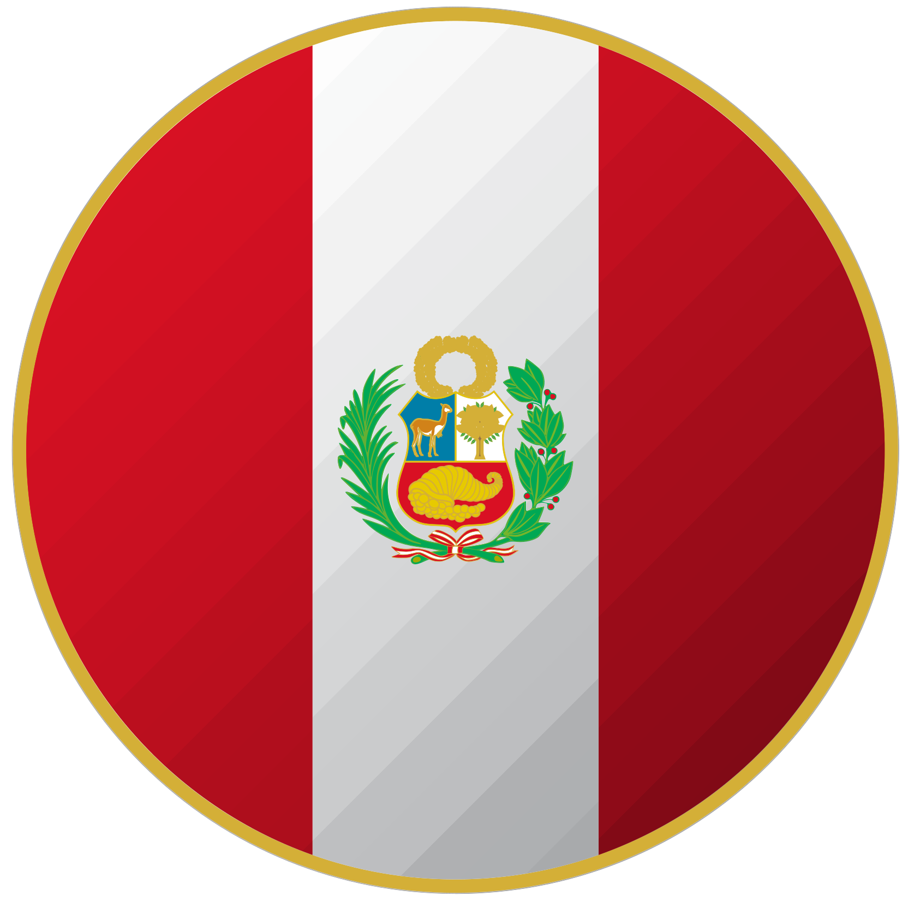
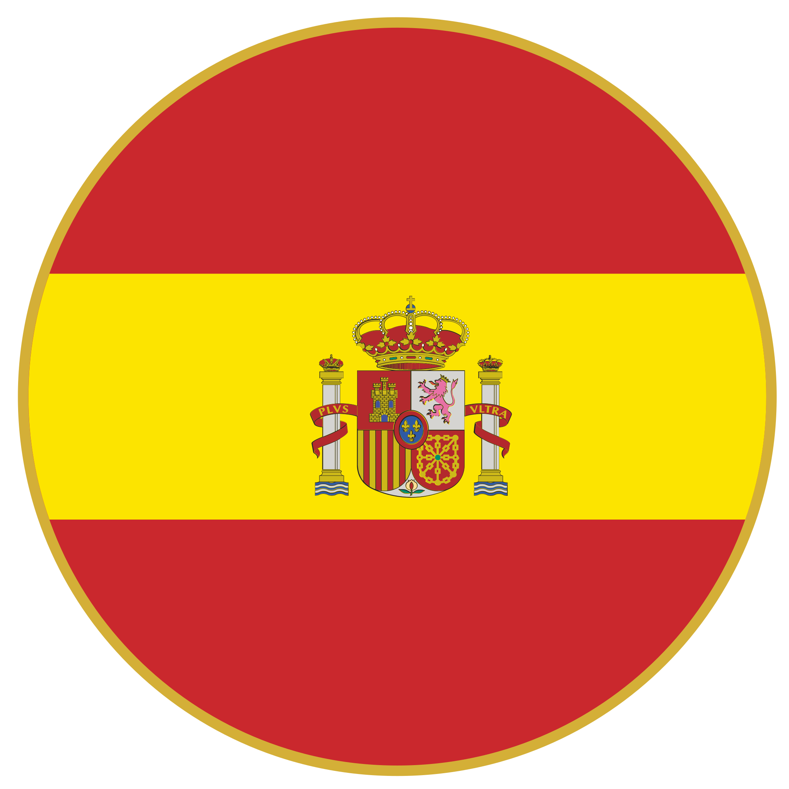

Mi nombre es Claudio Ceppi, tengo 41 años y soy venezolano. Nací en 1983 y viví toda mi vida en la ciudad de Puerto Ordaz hasta que me tocó migrar. Tuve una infancia normal sin mayores contratiempos. Hice mi secundaria en un instituto técnico donde estudié electricidad. Posteriormente, me inscribí en la universidad para estudiar electrónica, pero no pude terminar y cambié a informática, aunque tampoco logré culminar, en ambos casos por razones ajenas a la carrera.
Mi primer trabajo en Venezuela fue en una empresa de software administrativo, donde formé parte del equipo de mantenimiento SQL. Más tarde, trabajé en una hacienda de propiedad de mi padre, donde me mantuve por varios años hasta que la difícil situación política de mi país me hizo considerar la migración. Para ello, estudié gastronomía, ampliando así mis oportunidades laborales. Salí de mi país en agosto de 2016.
Introducción
Camino Migratorio
Estados Unidos
En agosto de 2016, viajé a Chicago, Estados Unidos. Permanecí allí durante los 6 meses permitidos por mi visa de turista, trabajando en un puesto comercial en un mall y en un sitio de comida rápida. Sin poder gestionar una visa de residencia legal, decidí probar suerte en otro país.
Perú
En enero de 2017, llegué a Lima, Perú, y permanecí allí por 7 años. Trabajé en el sector gastronómico en diversos cargos de servicio al cliente. Mi primer trabajo fue en una cafetería dentro de un edificio de oficinas. La pandemia de 2020 me dejó sin trabajo por un año, agotando mis ahorros. Luego, trabajé en una panadería francesa y finalmente en un restaurante italiano, donde ascendí a jefe de sección.
España
En febrero de 2024, llegué a España. Aunque aún no he encontrado empleo debido a mi situación, quiero cambiar de carrera profesional hacia el desarrollo web para aprovechar las oportunidades de trabajo remoto.
Cambio de Carrera
Profesión en el País de Origen: Atención al cliente con experiencia como jefe de sala.
Motivación para el Cambio: Mi afición por la computación desde los 12 años. La migración es el momento perfecto para cambiar al mundo digital, tanto por afición como por situación personal.
Nueva Carrera: Desarrollo web, sin descartar otros lenguajes y tecnologías.